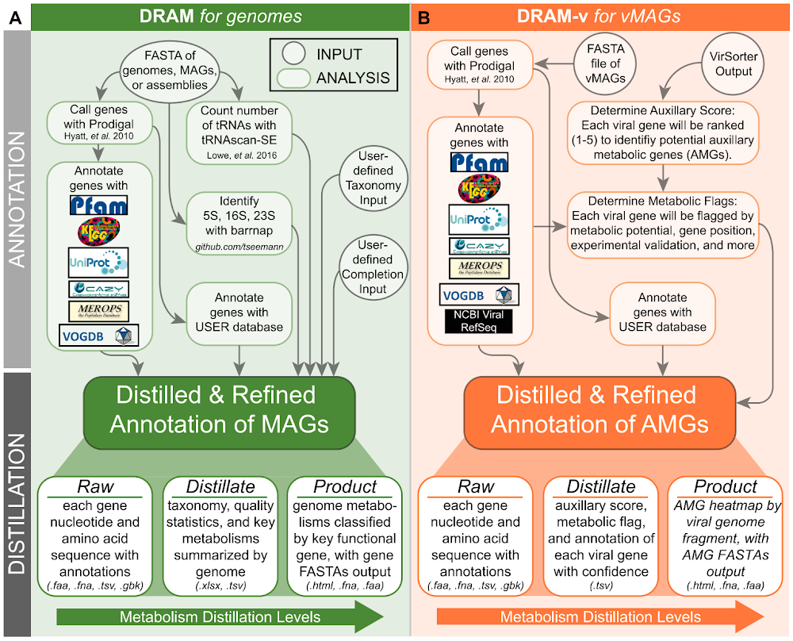

07: Viral protein annotation with DRAM-v
This directory contains scripts and configuration files to run DRAM-v on high-quality viral inferences as part of a viral inference pipeline using an LSF job scheduler.
The launcher script run_dramv.sh submits a job array to the LSF scheduler, where each job in the array processes a different sample from the input list through the 07_dramv.lsf job script. The configuration file config.sh allows you to set parameters such as the input list of samples, working directory, and paths to necessary containers and pass them on to the launcher and the job script.
Files in this directory
run_dramv.sh: This is the main launcher script that submits the job array to the LSF scheduler.07_dramv.lsf: This is the LSF job script that runs DRAM-v on the raw sequencing reads for each sample.config.sh: This configuration file allows you to set parameters such as the input list of samples, working directory, and paths to necessary containers.
How to use these scripts
- Modify the
config.shfile to set the appropriate paths and parameters for your analysis. - Run the
run_dramv.shscript to submit the job array to the LSF scheduler. - Monitor the job status using LSF commands (e.g.,
bjobs,bpeek, etc.) to check the progress of the DRAM-v analyses.
Prerequisites
- Access to an HPC cluster with LSF job scheduler.
- Apptainer/Singularity installed on the cluster.
- DRAM-v container available on the cluster.
- DRAM-v database available on the cluster (See 00_data_download).
- Paired reads cleaned with trimmomatic files available in the specified working directory.
Output
About DRAM-v
DRAM-v (Distilled and Refined Annotation of Metabolism for Viruses) is a tool designed for the annotation of viral genomes, particularly those derived from metagenomic data. It provides comprehensive functional annotations, including the identification of auxiliary metabolic genes (AMGs) that viruses may carry to manipulate host metabolism during infection. DRAM-v integrates multiple databases and annotation tools to deliver high-quality annotations for viral sequences. For more information, visit the DRAM-v documentation.

Workflow Steps
Panel B: DRAM-v for vMAGs
INPUT
DRAM-v is specifically designed for viral sequences and accepts:
- FASTA file of vMAGs: Viral metagenome-assembled genomes
- VirSorter Output: Results from VirSorter viral identification
ANNOTATION Phase
Step 1: Gene Calling
Genes are called using Prodigal (Hyatt et al. 2010), optimized for viral sequences.
Step 2: Gene Annotation with Viral-Specific Databases
Viral genes are annotated using specialized databases:
- Pfam: Protein families
- UniProt: Protein sequences
- CAZY: Carbohydrate enzymes
- MEROPS: Peptidases
- VOGDB: Virus Orthologous Groups (critical for viral annotation)
- NCBI Viral RefSeq: Reference viral protein sequences
Step 3: Determine Auxiliary Score
Each viral gene is ranked (1-5) to identify potential Auxiliary Metabolic Genes (AMGs): - AMGs are host-derived metabolic genes carried by viruses - Scoring helps distinguish true AMGs from contamination or annotation errors
Step 4: Determine Metabolic Flags
Each viral gene is flagged by:
- Metabolic potential
- Gene position within the viral genome
- Experimental validation status
- Additional confidence metrics
Step 5: Annotate with USER Database
User-provided databases can supplement viral annotation.
DISTILLATION Phase
Distilled & Refined Annotation of AMGs
Results are organized into metabolism distillation levels focused on viral metabolic capabilities:
Raw Level
- Each gene is output with nucleotide and amino acid sequences with annotations
- File formats:
.faa,.fna,.tsv,.gbk
Distillate Level
- Auxiliary score, metabolic flag, and annotation of each viral gene with confidence metrics
- File format:
.tsv
Product Level
- AMG heatmap organized by viral genome fragment, with AMG FASTAs as output
- File formats:
.html(heatmap),.fna,.faa
Parameters used in this pipeline:
apptainer exec ${DRAMV_SIF} dramv annotate $IN_DIR/final-viral-combined-for-dramv.fa -v $IN_DIR/viral-affi-contigs-for-dramv.tab \
-o ${OUT_DIR}/${SAMPLE}_dramv_output \
--min_contig_size 1000 \
--threads 2 \
--database_dir ${DRAMV_DB_DIR}
apptainer exec ${DRAMV_SIF} dramv distill -i ${OUT_DIR}/${SAMPLE}_dramv_output/annotations.tsv \
-o ${OUT_DIR}/${SAMPLE}_dramv_distilled \
--min_contig_size 3000 \
--min_score 0.8 \
--min_completeness 50 Explanation of parameters:
-i: Specifies the input files, which are the paired trimmed reads for the sample.-o: Specifies the output directory for DRAM-v results.--min_contig_size: Sets the minimum contig size to consider for annotation (default is 1000 bp).--threads: Allocates the number of CPU threads for DRAM-v to use.--database_dir: Specifies the directory containing the DRAM-v databases.--min_score: Minimum score to consider a viral contig high-quality--min_completeness: Minimum completeness percentage to consider a viral contig high-quality
NOTE: Ben uses: Bit score threshold: 60
Reverse search bit score threshold: 350